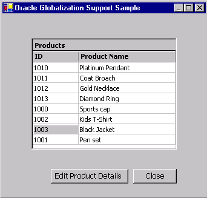

Oracle Globalization Support in Oracle
Data Provider for .NET
This purpose of this sample is to demonstrate Globalization
support in Oracle Data Provider for .NET (ODP.NET) to manage
culture sensitive data in the database using C# applications.
|
ODP .NET offers faster and reliable access to Oracle
Database by using Oracle Native APIs. ODP .NET provides features to
access any .NET application. The data access through
ODP.NET can be done using a collection of classes
contained in Oracle.DataAccess assembly.
Globalization feature enables user to set date format,
time, monetary, numeric, calendar conventions, sort order
etc. to his choice of language and territory. When a .NET
application connects to Oracle database, the session and
thread globalization parameters are initialized with the
values specified by the client computer’s Oracle globalization (or
National Language Setting (NLS)) registry settings. These NLS
parameters can be modified for the current thread and session through OracleGlobalization class and
will remain in effect only for that thread or session with
the database. The client's registry setting cannot be changed
through OracleGlobalization
class.
The String type uses current thread's culture settings
to represent the data while the default .NET types use
client computer's globalization registry settings.
Therefore the column data retrieved from database should
be converted to String types so that current thread's globaliation
settings take effect. Safe Type Mapping is used for columns of
corruptible types( Varchar2, Date, Number) so that they are converted to
String type instead of their default .NET types when data
is retrieved from the database. If the data is retrieved
as a string from database itself (for example using
TO_CHAR function in SELECT statement), session's culture
settings are used to convert the data appropriately.
This sample demonstrates modifying NLS settings for the
thread and session when retrieving and updating data to the database.
When this C# application is run it shows a list of
products from the database. The user can view the details
like name, description, price and last modification date
of a particular product . The user also has option to
modify the details of the product. The user can change the NLS
parameters for the thread and session at the design time so that
product details are viewed and updated using these settings.
|
- The sample at the start up shows a list of products from
database as shown in Figure 1.2

Figure 1.2
- The user can select a product and click "Edit Product
Details" button to view the details of product from database
as shown in Figure 1.3 . The Price column uses globalization
settings modified on session while all other columns use
globalization settings modified on thread.
Figure 1.3
- The user can modify the details and click "Update" button
to update the changes to database.
NOTE: This sample by default supports english
character set fonts for english, german, french etc
languages. To test this sample with some other language
characterset like Arabic, hindi, japanese the user can
install the font and then change the propery for description
textbox.
-
Visual C# installed with MS Development Environment
7.0 version (MS Visual Studio .NET) including MS .NET Framework
1.0 version
-
Oracle8i Database or later running SQL*Net TCP/IP listener
(can be downloaded here)
-
Oracle Data Provider for .NET (ODP.NET) (can be
downloaded here)
Unzip Globalization.zip
using Winzip or command utility to your convenient directory. Extraction
of the zip file results in the creation of Globalization directory.
Connect to your database as any user and run the script Globalization\Setup\DatabaseSetup.sql
at the SQL prompt.
@<Extract_Dir>\Globalization\Setup\DatabaseSetup.sql
where <Extract_Dir>
is the directory where you have extracted the sample.
The script creates a user "OraNet" with password
"OraNet".
It creates a PRODUCTS table as below and populates it with
initial data.
| Column Name |
Column Type |
| PRODUCT_ID |
NUMBER(5) |
| PRODUCT_NAME |
VARCHAR2(200) |
| PRODUCT_DESC |
NVARCHAR2(1000) |
| CATEGORY |
VARCHAR2(100) |
| PRICE |
NUMBER(15,8) |
| PRODUCT_STATUS |
VARCHAR2(30) |
| WEIGHT |
NUMBER(37,32) |
| MODIFICATION_DATE |
DATE |
-
Ensure that the Database setup has
been completed.
-
Open Globalization.sln
using Visual Studio .NET from <Extract_Dir>\Globalization
folder.
-
Edit Config.cs
file to change the database connection parameters i.e.TNSName for
database you want to use . You can also change NLS parameters to your
choice. The default settings in Config.cs are language="AMERICA" and territory="AMERICAN". Users
can try
different settings as below. For example,
//public static string language="AMERICA"; // NLS Language
//public static string territory="AMERICAN"; // NLS Territory
//public static string language="JAPANESE"; // NLS Language
//public static string territory="JAPAN"; // NLS Territory
public static string language="FRENCH"; // NLS Language
public static string territory="FRANCE"; // NLS Territory
Save this file.
-
Ensure that the following .NET Component References have
been added to Globalization
project:
- System
- System.Data
- System.Drawing
- System.Windows.Forms
- System.XML
- Oracle.DataAccess.
To add the above .NET Components
- a)Go to Menu ->View-> Solution Explorer.
- b)Right click on Globalization project, choose
'Add Reference'.
- c)Choose the above .NET Components from the list
displayed.
- d)Click 'Select', then OK.
- e) The chosen .NET component gets added to the
project.
- Build and run the sample.
| Directory |
File Name |
Description |
| Globalization\doc |
Readme.html |
This file |
| blaf.css |
This is a cascading stylesheet applied to Readme.html |
| Globalization\doc\images |
This folder contains images used in the
Readme.html file |
| Globalization\src\ |
Config.cs |
This C# file contains parameters for database
connection and NLS settings. |
| ConnectionManager.cs |
This C# file manages the database connection used by
sample. |
| Products.cs |
This C# file contains source code to display all the
products from the database and set globalization parameters
for thread and session. |
| ProductDetails.cs |
This C# file contains source code to view and update
product details to the database. |
| Globalization.csproj |
C# project file |
| Globalization.csproj.user |
Visual Studio Project User Options (this file gets
automatically generated when a Visual Studio Project is created) |
| Products.resx |
.NET XML Resource Template (this file gets
automatically generated when a Visual Studio Project is
created) |
| ProductDetails.resx |
.NET XML Resource Template (this file gets
automatically generated when a Visual Studio Project is
created) |
| Globalization.sln |
Visual Studio Solution |
| Globalization\Setup |
DatabaseSetup.sql |
This is a SQL script file |
|